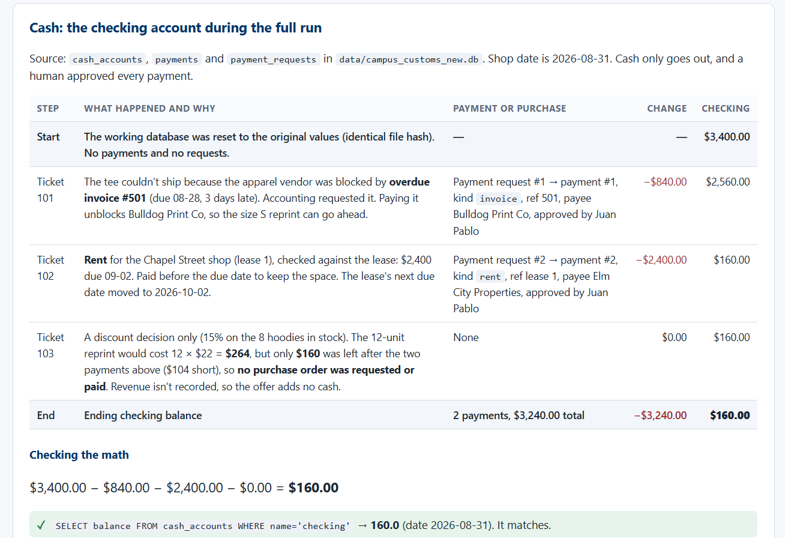
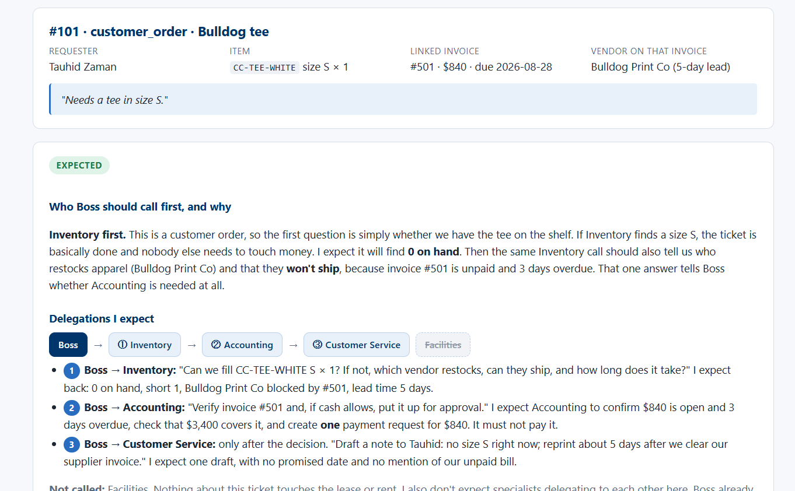
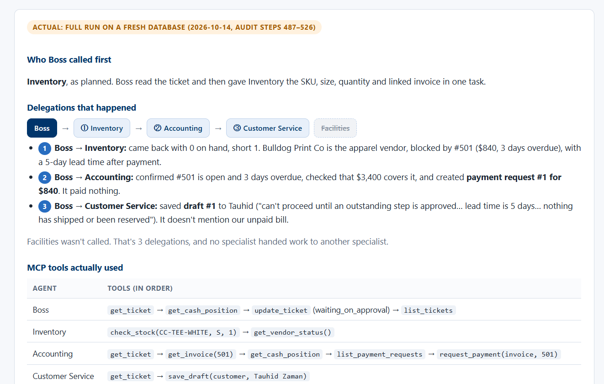
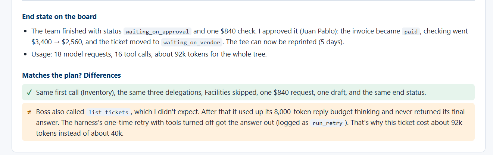
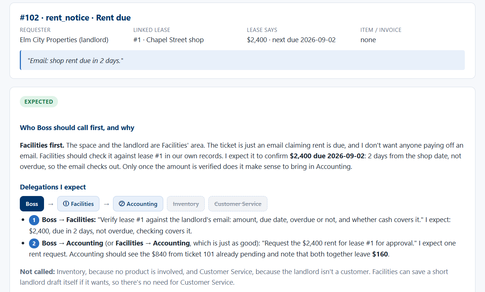
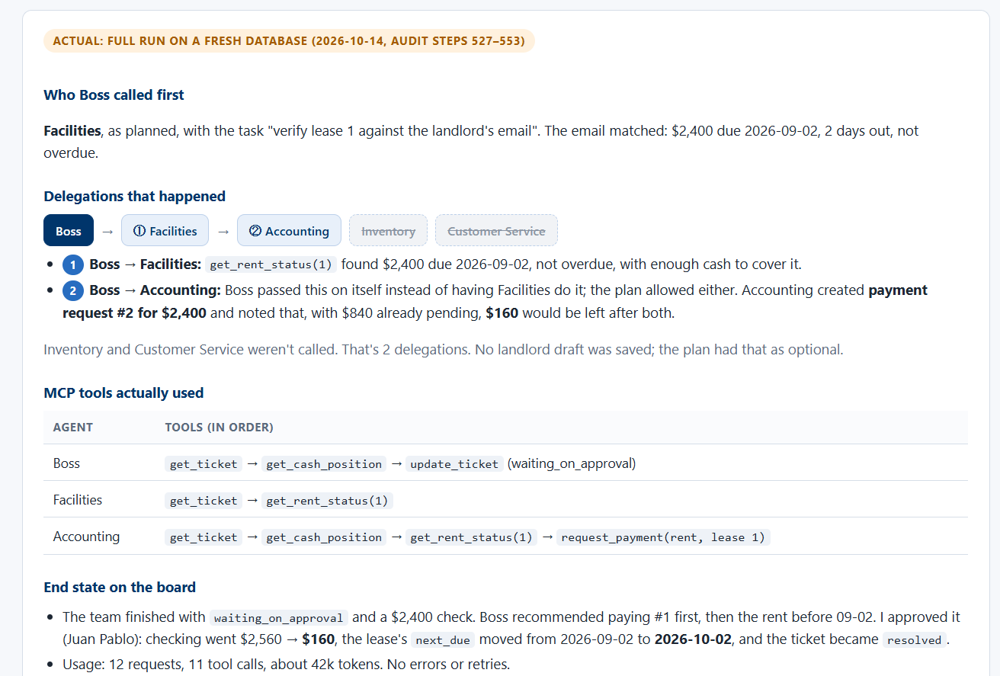
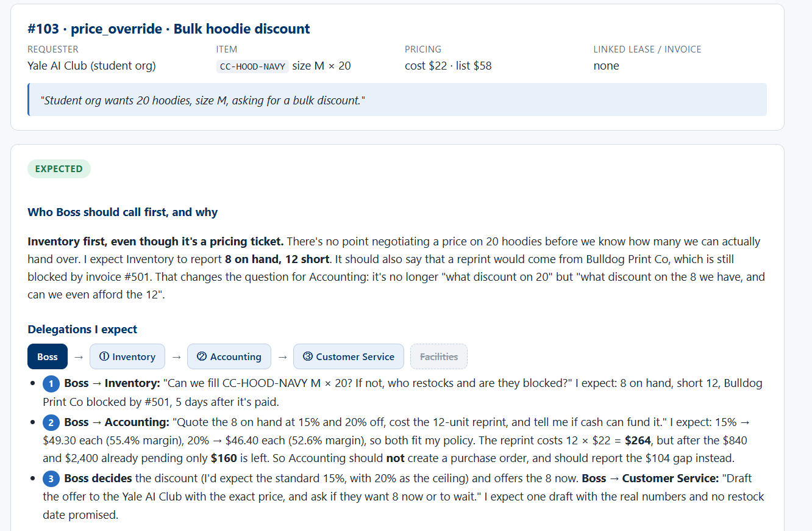
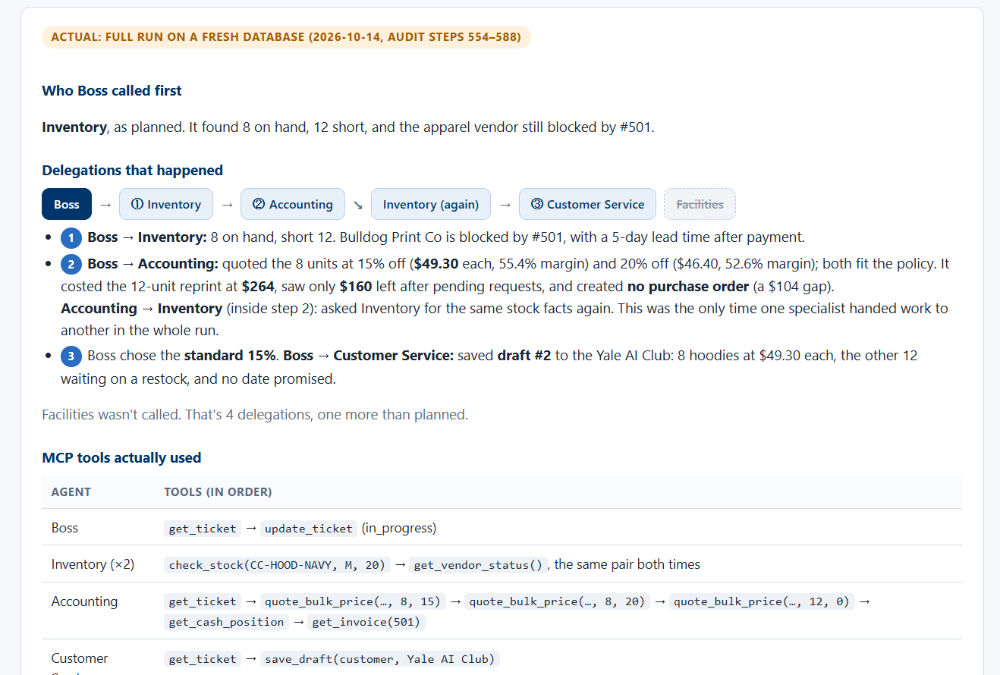

#101 · customer_order · Bulldog tee
CC-TEE-WHITE size S × 1"Needs a tee in size S."
Who Boss should call first, and why
Inventory first. This is a customer order, so the first question is simply whether we have the tee on the shelf. If Inventory finds a size S, the ticket is basically done and nobody else needs to touch money. I expect it will find 0 on hand. Then the same Inventory call should also tell us who restocks apparel (Bulldog Print Co) and that they won't ship, because invoice #501 is unpaid and 3 days overdue. That one answer tells Boss whether Accounting is needed at all.
Delegations I expect
- 1Boss → Inventory: "Can we fill CC-TEE-WHITE S × 1? If not, which vendor restocks, can they ship, and how long does it take?" I expect back: 0 on hand, short 1, Bulldog Print Co blocked by #501, lead time 5 days.
- 2Boss → Accounting: "Verify invoice #501 and, if cash allows, put it up for approval." I expect Accounting to confirm $840 is open and 3 days overdue, check that $3,400 covers it, and create one payment request for $840. It must not pay it.
- 3Boss → Customer Service: only after the decision. "Draft a note to Tauhid: no size S right now; reprint about 5 days after we clear our supplier invoice." I expect one draft, with no promised date and no mention of our unpaid bill.
Not called: Facilities. Nothing about this ticket touches the lease or rent. I also don't expect specialists delegating to each other here. Boss already has everything it needs from each one.
MCP tools I expect the run to use
| Agent | Tool | Expected call → result |
|---|---|---|
| Boss | get_ticket | (101) → tee S × 1, linked invoice #501 |
| Inventory | check_stock | (CC-TEE-WHITE, S, 1) → on hand 0, shortfall 1 |
| Inventory | get_vendor_status | → Bulldog Print Co, apparel, 5 days, can_ship_new_product = false (#501) |
| Accounting | get_invoice | (501) → $840, open, 3 days overdue |
| Accounting | get_cash_position | → $3,400, nothing pending yet |
| Accounting | request_payment | (invoice, 501) → request for $840, pending_approval |
| Customer Service | save_draft | customer draft to Tauhid Zaman |
| Boss | update_ticket | → waiting_on_approval, with a note |
Tools I don't expect: get_rent_status, quote_bulk_price, approve_and_pay (agents don't even have it).
Expected end state
- One pending payment request: $840 for invoice #501. No money moved; checking still shows $3,400.
- One customer draft for Tauhid. Status
draft, not sent. - Ticket status
waiting_on_approval. Next step for me: approve the $840.
Who Boss called first
Inventory, as planned. Boss read the ticket and then gave Inventory the SKU, size, quantity and linked invoice in one task.
Delegations that happened
- 1Boss → Inventory: came back with 0 on hand, short 1. Bulldog Print Co is the apparel vendor, blocked by #501 ($840, 3 days overdue), with a 5-day lead time after payment.
- 2Boss → Accounting: confirmed #501 is open and 3 days overdue, checked that $3,400 covers it, and created payment request #1 for $840. It paid nothing.
- 3Boss → Customer Service: saved draft #1 to Tauhid ("can't proceed until an outstanding step is approved… lead time is 5 days… nothing has shipped or been reserved"). It doesn't mention our unpaid bill.
Facilities wasn't called. That's 3 delegations, and no specialist handed work to another specialist.
MCP tools actually used
| Agent | Tools (in order) |
|---|---|
| Boss | get_ticket → get_cash_position → update_ticket (waiting_on_approval) → list_tickets |
| Inventory | check_stock(CC-TEE-WHITE, S, 1) → get_vendor_status() |
| Accounting | get_ticket → get_invoice(501) → get_cash_position → list_payment_requests → request_payment(invoice, 501) |
| Customer Service | get_ticket → save_draft(customer, Tauhid Zaman) |
End state on the board
- The team finished with status
waiting_on_approvaland one $840 check. I approved it (Juan Pablo): the invoice becamepaid, checking went $3,400 → $2,560, and the ticket moved towaiting_on_vendor. The tee can now be reprinted (5 days). - Usage: 18 model requests, 16 tool calls, about 92k tokens for the whole tree.
Matches the plan? Differences
- Same first call (Inventory), the same three delegations, Facilities skipped, one $840 request, one draft, and the same end status.
- Boss also called
list_tickets, which I didn't expect. After that it used up its 8,000-token reply budget thinking and never returned its final answer. The harness's one-time retry with tools turned off got the answer out (logged asrun_retry). That's why this ticket cost about 92k tokens instead of about 40k.
#102 · rent_notice · Rent due
"Email: shop rent due in 2 days."
Who Boss should call first, and why
Facilities first. The space and the landlord are Facilities' area. The ticket is just an email claiming rent is due, and I don't want anyone paying off an email. Facilities should check it against lease #1 in our own records. I expect it to confirm $2,400 due 2026-09-02: 2 days from the shop date, not overdue, so the email checks out. Only once the amount is verified does it make sense to bring in Accounting.
Delegations I expect
- 1Boss → Facilities: "Verify lease #1 against the landlord's email: amount, due date, overdue or not, and whether cash covers it." I expect: $2,400, due in 2 days, not overdue, checking covers it.
- 2Boss → Accounting (or Facilities → Accounting, which is just as good): "Request the $2,400 rent for lease #1 for approval." I expect one rent request. Accounting should see the $840 from ticket 101 already pending and note that both together leave $160.
Not called: Inventory, because no product is involved, and Customer Service, because the landlord isn't a customer. Facilities can save a short landlord draft itself if it wants, so there's no need for Customer Service.
MCP tools I expect the run to use
| Agent | Tool | Expected call → result |
|---|---|---|
| Boss | get_ticket | (102) → rent notice, lease #1 |
| Facilities | get_rent_status | (1) → $2,400, due 2026-09-02, 2 days, not overdue, covered |
| Accounting | get_cash_position | → $3,400, $840 pending (from #101), $2,560 after pending |
| Accounting | request_payment | (rent, lease 1) → request for $2,400, pending_approval |
| Boss | update_ticket | → waiting_on_approval, with a note |
Optional: Facilities save_draft (landlord) saying payment is being processed. Not expected: check_stock, get_vendor_status, quote_bulk_price.
Expected end state
- A second pending request: $2,400 rent. Together with the $840, $3,240 is pending, leaving $160, which is still fine.
- The lease's
next_duestays 2026-09-02 until I approve. Only then should it move to 2026-10-02. - Ticket status
waiting_on_approval. Next step for me: approve the rent before 09-02.
Who Boss called first
Facilities, as planned, with the task "verify lease 1 against the landlord's email". The email matched: $2,400 due 2026-09-02, 2 days out, not overdue.
Delegations that happened
- 1Boss → Facilities:
get_rent_status(1)found $2,400 due 2026-09-02, not overdue, with enough cash to cover it. - 2Boss → Accounting: Boss passed this on itself instead of having Facilities do it; the plan allowed either. Accounting created payment request #2 for $2,400 and noted that, with $840 already pending, $160 would be left after both.
Inventory and Customer Service weren't called. That's 2 delegations. No landlord draft was saved; the plan had that as optional.
MCP tools actually used
| Agent | Tools (in order) |
|---|---|
| Boss | get_ticket → get_cash_position → update_ticket (waiting_on_approval) |
| Facilities | get_ticket → get_rent_status(1) |
| Accounting | get_ticket → get_cash_position → get_rent_status(1) → request_payment(rent, lease 1) |
End state on the board
- The team finished with
waiting_on_approvaland a $2,400 check. Boss recommended paying #1 first, then the rent before 09-02. I approved it (Juan Pablo): checking went $2,560 → $160, the lease'snext_duemoved from 2026-09-02 to 2026-10-02, and the ticket becameresolved. - Usage: 12 requests, 11 tool calls, about 42k tokens. No errors or retries.
Matches the plan? Differences
- A full match: Facilities first, then Accounting, the same tools, $2,400 requested, and $160 left after both. Inventory and Customer Service stayed out.
- A small difference: Accounting called
get_rent_statusagain even though Facilities had already reported the rent. It's a harmless duplicate read.
#103 · price_override · Bulk hoodie discount
CC-HOOD-NAVY size M × 20"Student org wants 20 hoodies, size M, asking for a bulk discount."
Who Boss should call first, and why
Inventory first, even though it's a pricing ticket. There's no point negotiating a price on 20 hoodies before we know how many we can actually hand over. I expect Inventory to report 8 on hand, 12 short. It should also say that a reprint would come from Bulldog Print Co, which is still blocked by invoice #501. That changes the question for Accounting: it's no longer "what discount on 20" but "what discount on the 8 we have, and can we even afford the 12".
Delegations I expect
- 1Boss → Inventory: "Can we fill CC-HOOD-NAVY M × 20? If not, who restocks and are they blocked?" I expect: 8 on hand, short 12, Bulldog Print Co blocked by #501, 5 days after it's paid.
- 2Boss → Accounting: "Quote the 8 on hand at 15% and 20% off, cost the 12-unit reprint, and tell me if cash can fund it." I expect: 15% → $49.30 each (55.4% margin), 20% → $46.40 each (52.6% margin), so both fit my policy. The reprint costs 12 × $22 = $264, but after the $840 and $2,400 already pending only $160 is left. So Accounting should not create a purchase order, and should report the $104 gap instead.
- 3Boss decides the discount (I'd expect the standard 15%, with 20% as the ceiling) and offers the 8 now. Boss → Customer Service: "Draft the offer to the Yale AI Club with the exact price, and ask if they want 8 now or to wait." I expect one draft with the real numbers and no restock date promised.
Not called: Facilities, since there's nothing about the space. Inventory and Accounting shouldn't need to delegate to each other either, because Boss passes Inventory's numbers to Accounting.
MCP tools I expect the run to use
| Agent | Tool | Expected call → result |
|---|---|---|
| Boss | get_ticket | (103) → hoodie M × 20, price_override |
| Inventory | check_stock | (CC-HOOD-NAVY, M, 20) → on hand 8, shortfall 12 |
| Inventory | get_vendor_status | → Bulldog Print Co blocked by #501, lead 5 days |
| Accounting | quote_bulk_price | (CC-HOOD-NAVY, 8, 15) and (…, 8, 20); (…, 12, 0) for the reprint cost of $264 |
| Accounting | get_cash_position | → $3,400, $3,240 pending, $160 after pending |
| Customer Service | save_draft | customer draft to Yale AI Club |
| Boss | update_ticket | → in_progress (waiting on the club's answer and on cash for the 12) |
Not expected: request_payment, because a $264 purchase order doesn't fit in $160 and the vendor is blocked anyway. Also not expected: get_rent_status.
Expected end state
- Discount decision recorded by Boss: 8 hoodies now at 15% off ($49.30 each, $394.40), or at most 20%. Never below the $22 cost.
- No new payment request. The 12-unit reprint waits until #501 is paid and there's cash for it.
- One customer draft for the Yale AI Club. Ticket status
in_progress.
Who Boss called first
Inventory, as planned. It found 8 on hand, 12 short, and the apparel vendor still blocked by #501.
Delegations that happened
- 1Boss → Inventory: 8 on hand, short 12. Bulldog Print Co is blocked by #501, with a 5-day lead time after payment.
- 2Boss → Accounting: quoted the 8 units at 15% off ($49.30 each, 55.4% margin) and 20% off ($46.40, 52.6% margin); both fit the policy. It costed the 12-unit reprint at $264, saw only $160 left after pending requests, and created no purchase order (a $104 gap).
Accounting → Inventory (inside step 2): asked Inventory for the same stock facts again. This was the only time one specialist handed work to another in the whole run. - 3Boss chose the standard 15%. Boss → Customer Service: saved draft #2 to the Yale AI Club: 8 hoodies at $49.30 each, the other 12 waiting on a restock, and no date promised.
Facilities wasn't called. That's 4 delegations, one more than planned.
MCP tools actually used
| Agent | Tools (in order) |
|---|---|
| Boss | get_ticket → update_ticket (in_progress) |
| Inventory (×2) | check_stock(CC-HOOD-NAVY, M, 20) → get_vendor_status(), the same pair both times |
| Accounting | get_ticket → quote_bulk_price(…, 8, 15) → quote_bulk_price(…, 8, 20) → quote_bulk_price(…, 12, 0) → get_cash_position → get_invoice(501) |
| Customer Service | get_ticket → save_draft(customer, Yale AI Club) |
As planned, request_payment wasn't used, so no purchase order was created.
End state on the board
- Board status
in_progress, with no check and no cash change. The desk shows it as resolved by the team; the board status means it's waiting on the club's answer and on cash for the other 12. - Usage: 15 requests, 18 tool calls, about 52k tokens. No errors.
Matches the plan? Differences
- Same first call, the same 15% decision ($49.30 each), no purchase order because $264 > $160, one draft, the same status, and Facilities skipped.
- Accounting delegated to Inventory to re-check stock that Boss had already passed along. That added an unplanned 4th hand-off and a duplicate
check_stock/get_vendor_status. The guardrails allowed it (depth 2 is within the limit), but it's the clearest inefficiency in the run. - Boss skipped
get_cash_positionand relied on Accounting's cash figure instead.
Cash: the checking account during the full run
Source: cash_accounts, payments and payment_requests in data/campus_customs_new.db. Shop date is 2026-08-31. Cash only goes out, and a human approved every payment.
| Step | What happened and why | Payment or purchase | Change | Checking |
|---|---|---|---|---|
| Start | The working database was reset to the original values (identical file hash). No payments and no requests. | — | — | $3,400.00 |
| Ticket 101 | The tee couldn't ship because the apparel vendor was blocked by overdue invoice #501 (due 08-28, 3 days late). Accounting requested it. Paying it unblocks Bulldog Print Co, so the size S reprint can go ahead. | Payment request #1 → payment #1, kind invoice, ref 501, payee Bulldog Print Co, approved by Juan Pablo | −$840.00 | $2,560.00 |
| Ticket 102 | Rent for the Chapel Street shop (lease 1), checked against the lease: $2,400 due 09-02. Paid before the due date to keep the space. The lease's next due date moved to 2026-10-02. | Payment request #2 → payment #2, kind rent, ref lease 1, payee Elm City Properties, approved by Juan Pablo | −$2,400.00 | $160.00 |
| Ticket 103 | A discount decision only (15% on the 8 hoodies in stock). The 12-unit reprint would cost 12 × $22 = $264, but only $160 was left after the two payments above ($104 short), so no purchase order was requested or paid. Revenue isn't recorded, so the offer adds no cash. | None | $0.00 | $160.00 |
| End | Ending checking balance | 2 payments, $3,240.00 total | −$3,240.00 | $160.00 |
Checking the math
$3,400.00 − $840.00 − $2,400.00 − $0.00 = $160.00
SELECT balance FROM cash_accounts WHERE name='checking'→ 160.0 (date 2026-08-31). It matches.SELECT SUM(amount) FROM payments→ 3240.0 (2 rows, bothapproved_by = 'Juan Pablo'), and 3,400 − 3,240 = 160. It matches.- No requests are still pending (
pending_total = 0), and the balance never went negative. - The plan predicted $160 left after paying both checks, and that's exactly what happened.
Reflection
How the agents did, compared with my plan
Overall, I think the agents did well. All three tickets were resolved, and the Cash tab shows the checking account ending at $160, which matches the database. On 101, the team found that invoice #501 was blocking Bulldog Print Co, so Accounting requested the $840 payment and Customer Service wrote a draft for Tauhid. On 102, Facilities confirmed the lease and Accounting requested the $2,400 rent. On 103, they did not create a purchase order because the 12-unit reprint cost $264 and only $160 was left, so they offered the Yale AI Club 15% off the 8 hoodies in stock. Compared to my Expected plan, Boss called the agents I expected first, and the agents I expected to skip were skipped. The differences were about efficiency, not results. On the 101 tab, Boss called list_tickets, which I didn’t expect, and then used up its 8,000-token reply budget, so the ticket cost about 92k tokens instead of 40k. On 102, Accounting checked the rent again with get_rent_status after Facilities had already verified it. On 103, Accounting sent work back to Inventory, which was the one extra hand-off I didn’t plan for.
Where one agent with tools would have been enough
Tickets 102 and 103 would have been simpler as one agent with tools. Both only need a few lookups and checks (lease, stock, pricing, cash), and the duplicate work only happened because of the hand-offs, which used tokens without adding anything. I think multiple agents make more sense for 101, where inventory, vendor rules, payments and customer messaging all come together.
What the team could and could not handle next
The current team could handle new problems that reuse the same tools. For example, a low-stock alert where Inventory finds the vendor and Accounting prepares a purchase order for approval, an invoice like #501 coming due that gets queued for a human to sign, or a customer asking to change a size or cancel an order. What it could not handle is anything outside what I built. Money coming in, like a club paying a bill or a refund, would need a Receivables agent and tools to record incoming payments, since the Cash tab only shows money going out. Negotiating a faster delivery with Bulldog Print Co would need an Outreach agent with an email tool and a human approval step, because right now everything stays a draft. Planning next semester’s hoodie order would need a sales history table and a Forecasting agent that suggests quantities for Boss to approve.
Appendix: evidence I reviewed
Screenshots I took of this page while checking the Ticket and Cash tabs before writing the reflection. The image files are in output/screenshots/reflection/.







